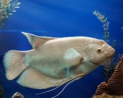

Dev Gurami (Osphronemus goramy), Güneydoğu Asya kökenli, tatlı su gölleri ve nehirlerinde yaşayan büyük boyutlu bir balık türüdür. Akvaryum hobisinde daha çok gösterişli ve iri yapısıyla bilinir. Yetişkin bireyler 60–70 cm uzunluğa kadar büyüyebilir ve bu özelliğiyle gurami familyasının en büyük üyelerinden biridir. Bu tür, 24–28°C sıcaklıkta, hafif asidik veya nötr pH değerine sahip sularda sağlıklı şekilde yaşar. Dayanıklı yapısı sayesinde geniş akvaryumlarda veya süs havuzlarında beslenebilir. Uzun ömürlüdür ve uygun koşullarda 20 yılın üzerinde yaşayabilir. Davranış açısından dev guramiler genellikle barışçıldır; ancak büyüklükleri nedeniyle küçük balıklarla aynı ortamda beslenmeleri önerilmez. Bölgeci davranışlar gösterebilirler, bu yüzden geniş yaşam alanı sağlamak önemlidir. Beslenmeleri çeşitlidir: bitkisel yemler, sebze destekleri (marul, bezelye), canlı yemler ve protein ağırlıklı diyetle sağlıklı gelişim gösterirler. Doğal ortamlarında hem bitkisel hem de hayvansal besinlerle beslenirler. Üreme döneminde erkek dev gurami köpük yuva yapar ve yumurtaları bu yuvada korur. Bu davranışlarıyla gurami familyasının diğer üyeleriyle benzer özellikler taşır.